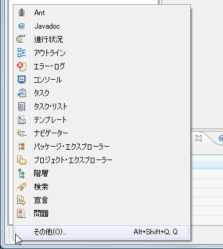
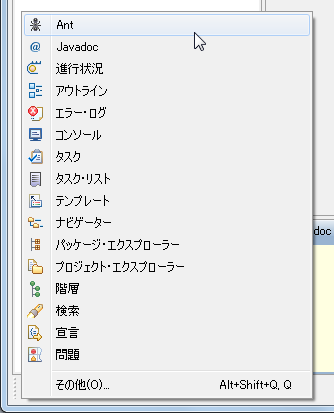
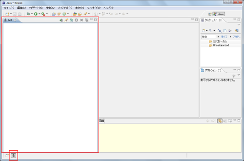
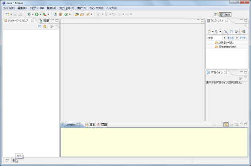
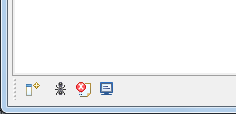
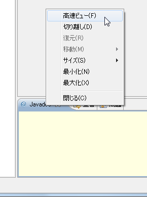
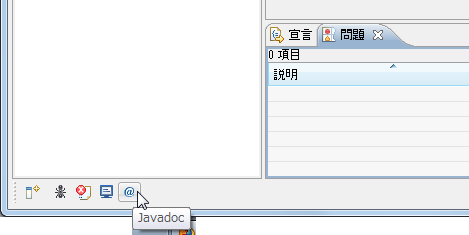
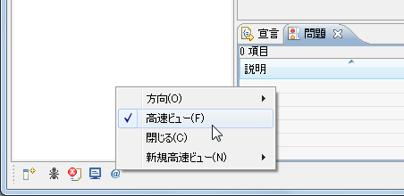
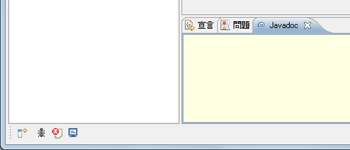

高速ビュー
ワークベンチに数多くのビューを表示していると一つ一つのビューのエリアが小さくなってしまいます。そこでビューを通常はボタンとして表示し、必要な時に開くことができる仕組みが高速ビューです。
高速ビューに指定されたビューはワークベンチの左下隅に表示されます。

現在は高速ビューに設定されているビューが存在しない状態です。では左下隅に表示されているボタンをクリックしてみて下さい。

ビューの一覧が表示されます。この一覧は現在既に開いているものだけではなく、そうではないものも含まれます。またこの一覧に無いものは「その他」を選ぶと表示されます。
ではこの中から「Ant」をクリックしてみます。

「Ant」ビューが開きます。また左下隅には「Ant」ビューに対応したボタンが追加されます。

このボタンを押すたびに、対応するビューが開いたり閉じたりします。ではボタンを押してみます。

「Ant」ビューが閉じました。このようにボタンを押すことで表示と非表示を切り替えられます。
複数のビューを一度に高速ビューにしておくことができます。

各ビューに応じたボタンが表示されます。
既に開いているビューに対しては、先ほどと同じように一覧から選択することもできますし、ビュー名を表示しているタブの上で右クリックして表示されたメニューの中の「高速ビュー」を選ぶことで高速ビューに設定することも可能です。

高速ビューに対応するボタンが追加されます。

高速ビューに設定したビューを通常のビューに戻すにはいくつか方法がありますが、ビューを表すアイコンを右クリックして表示されたメニューの中から「高速ビュー」の横についているチェックを外すことで通常のビューに戻すことができます。

通常のビューに戻り、高速ビューからボタンが無くなります。

このように高速ビューを使用することで、普段から使用するけれども常に画面に表示させておく必要がないビューを小さくしておくことができます。
( Written by Tatsuo Ikura )

著者 / TATSUO IKURA
初心者～中級者の方を対象としたプログラミング方法や開発環境の構築の解説を行うサイトの運営を行っています。